"HealthTopic","Population","Indicator","Unit","Time","RegionCode","RegionName","NumValue","TxtValue"
"Invasive meningococcal disease","Confirmed cases","Reported cases","N","1999-01","AT","Austria",11.000000000,""
"Invasive meningococcal disease","Confirmed cases","Reported cases","N","1999-01","BE","Belgium",24.000000000,""Tutorial 1: “sts” class and univariate hhh4()
Using data from the ECDC Surveillance Atlas of Infectious Diseases
This tutorial illustrates how to import time series data as an "sts" (surveillance time series) object as used by the R package surveillance. As an example, we will import a (gzip-compressed) csv file downloaded from the ECDC Surveillance Atlas of Infectious Diseases. It contains the monthly number of reported cases of invasive meningococcal disease (IMD).
The code to import the raw data is already provided here and in the R script template so that you don’t lose time with this step and can concentrate on the sts() and hhh4() exercises further below.
Before you start, here is what Wikipedia says about the epidemiology of meningococcus, the bacterium causing IMD:
It is spread through saliva and other respiratory secretions during coughing, sneezing, kissing, and chewing on toys. Inhalation of respiratory droplets from a carrier which may be someone who is themselves in the early stages of disease can transmit the bacteria. […] The incubation period is short, from 2 to 10 days.
Import count time series
This is how the first 3 lines of the csv file from ECDC look like:
Disclaimer (ECDC)
The views and opinions of the authors expressed herein do not necessarily state or reflect those of the ECDC. The accuracy of the authors’ statistical analysis and the findings they report are not the responsibility of ECDC. ECDC is not responsible for conclusions or opinions drawn from the data provided. ECDC is not responsible for the correctness of the data and for data management, data merging and data collation after provision of the data. ECDC shall not be held liable for improper or incorrect use of the data.The first step is to import the counts from the csv file and reshape the data into the wide (matrix) format typically used for multivariate time series and expected by sts() and basic ts().
ecdc_long <- read.csv("data/ECDC_surveillance_data_IMD.csv.gz",
na.strings = "-") # always important to know NA encoding!
## exclude aggregate counts
ecdc_long <- subset(ecdc_long, !RegionName %in% c("EU/EEA", "EU"))
## reshape from long to wide format of multivariate time series
ecdc <- reshape(ecdc_long[c("Time", "RegionCode", "NumValue")],
direction = "wide", idvar = "Time", timevar = "RegionCode")
names(ecdc) <- sub("NumValue.", "", names(ecdc), fixed = TRUE)
row.names(ecdc) <- ecdc$Time; ecdc$Time <- NULL
head(ecdc) AT BE CZ DE DK EE EL ES FI FR IE IS IT LU MT NL NO PL SE SI UK LT PT LV HU SK CY BG RO HR
1999-01 11 24 5 37 19 0 18 172 6 43 53 2 36 0 0 81 4 11 2 1 495 NA NA NA NA NA NA NA NA NA
1999-02 14 37 8 48 17 0 16 123 9 65 43 2 31 0 2 68 11 9 3 0 267 NA NA NA NA NA NA NA NA NA
1999-03 12 49 11 54 28 0 42 90 5 35 53 1 29 0 3 82 10 8 6 0 224 NA NA NA NA NA NA NA NA NA
1999-04 6 23 9 36 22 1 21 70 3 30 40 2 23 0 0 33 4 4 2 1 203 NA NA NA NA NA NA NA NA NA
1999-05 3 27 14 36 11 0 16 78 7 18 34 2 18 0 1 41 6 6 3 1 140 NA NA NA NA NA NA NA NA NA
1999-06 4 25 10 30 12 0 11 50 8 19 24 2 21 0 1 38 4 1 2 0 199 NA NA NA NA NA NA NA NA NAtail(ecdc) AT BE CZ DE DK EE EL ES FI FR IE IS IT LU MT NL NO PL SE SI UK LT PT LV HU SK CY BG RO HR
2018-07 1 10 8 18 5 1 2 25 1 34 5 0 12 NA 0 16 2 7 6 1 28 1 5 0 0 2 0 NA 3 NA
2018-08 4 1 7 15 1 0 3 13 1 17 5 0 8 NA 1 13 1 8 2 0 32 1 4 0 0 2 0 NA 6 NA
2018-09 1 5 0 14 0 0 1 22 2 17 7 0 7 NA 0 7 1 4 6 2 44 2 1 1 4 0 0 NA 4 NA
2018-10 2 13 3 27 4 0 2 32 3 30 4 0 12 NA 0 21 3 18 6 2 57 1 3 1 2 5 0 NA 6 NA
2018-11 3 6 7 15 3 0 4 26 0 28 4 0 10 NA 0 10 0 21 1 2 44 1 5 0 3 1 0 NA 2 NA
2018-12 1 9 7 17 3 0 4 34 1 47 6 0 10 NA 0 13 2 21 7 3 60 3 5 1 6 2 0 NA 4 NA## exclude contries without data
ecdc <- ecdc[, colSums(!is.na(ecdc)) > 0]Country codes are given in the Eurostat Glossary.
Import population data
Population counts are needed to calculate incidence values. Eurostat provides such data as table “TPS00001”; we have downloaded the values for 2018 as a csv file.
popdata <- read.csv("data/Eurostat_population_2018.csv")
head(popdata, 3) DATAFLOW LAST.UPDATE freq indic_de geo TIME_PERIOD OBS_VALUE OBS_FLAG
1 ESTAT:TPS00001(1.0) 17/03/22 23:00:00 A JAN AD 2018 74794 e
2 ESTAT:TPS00001(1.0) 17/03/22 23:00:00 A JAN AL 2018 2870324
3 ESTAT:TPS00001(1.0) 17/03/22 23:00:00 A JAN AM 2018 2972732 stopifnot(colnames(ecdc) %in% popdata$geo)
pop <- setNames(popdata$OBS_VALUE, popdata$geo)[colnames(ecdc)]
pop AT BE CZ DE DK EE EL ES FI FR IE
8822267 11398589 10610055 82792351 5781190 1319133 10741165 46658447 5513130 67026224 4830392
IS IT LU MT NL NO PL SE SI UK LT
348450 60483973 602005 475701 17181084 5295619 37976687 10120242 2066880 66273576 2808901
PT LV HU SK CY RO
10291027 1934379 9778371 5443120 864236 19533481 Import map
The "sts" class can be used without a supplementary map, but incorporating one enables a spatial view of the data. We retrieve a suitable GeoJSON dataset of administrative boundaries from Eurostat/GISCO, with Copyright (C) EuroGeographics. The result of importing that dataset is available as map.RData (so as to avoid potential problems with system requirements for sf).
file_map <- "data/map.RData"
if (file.exists(file_map)) {
load(file_map)
} else {
library("sf")
## read NUTS1-level data from Eurostat/GISCO
map1 <- st_read("https://gisco-services.ec.europa.eu/distribution/v2/nuts/geojson/NUTS_RG_60M_2021_4326_LEVL_1.geojson")
## omit French overseas regions for a more compact map
map1 <- subset(map1, NUTS_ID != "FRY")
## union polygons by country
map0 <- aggregate(map1[0], by = list(COUNTRY = map1$CNTR_CODE), FUN = sum)
## check that the map contains the country codes of colnames(ecdc)
stopifnot(colnames(ecdc) %in% map0$COUNTRY)
## convert to "SpatialPolgons" for use with sts()
row.names(map0) <- map0$COUNTRY # to match with colnames(ecdc)
library("sp")
map <- geometry(as_Spatial(map0))
save(map, file = file_map, compress = "xz")
}library("sp")
par(mar = c(0,0,0,0))
plot(map)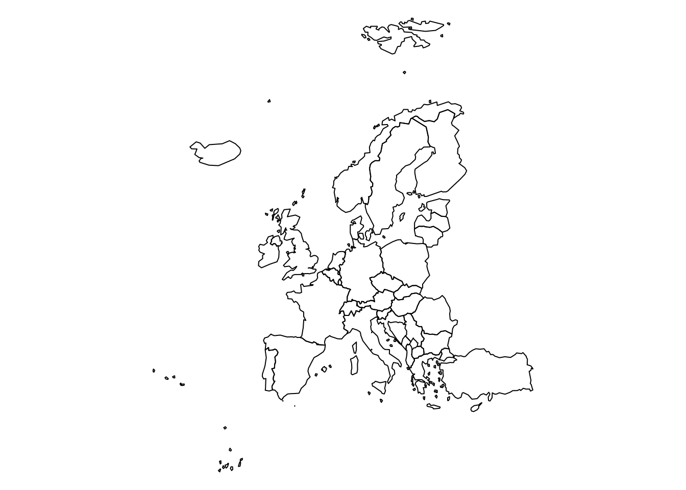
Create an “sts” object
Using the above ingredients (ecdc, pop, map), we can now create an "sts" object via sts().
library("surveillance")
## start of the monthly time series
(start <- as.numeric(strsplit(rownames(ecdc)[1], split="-")[[1]]))[1] 1999 1## IMD0 <- sts(....) # see help("sts")solution
IMD0 <- sts(ecdc, start = start, frequency = 12, # monthly data
population = pop, map = map)Plot the (aggregated) count time series. Which problem do you notice?
solution
plot(IMD0, type = observed ~ time)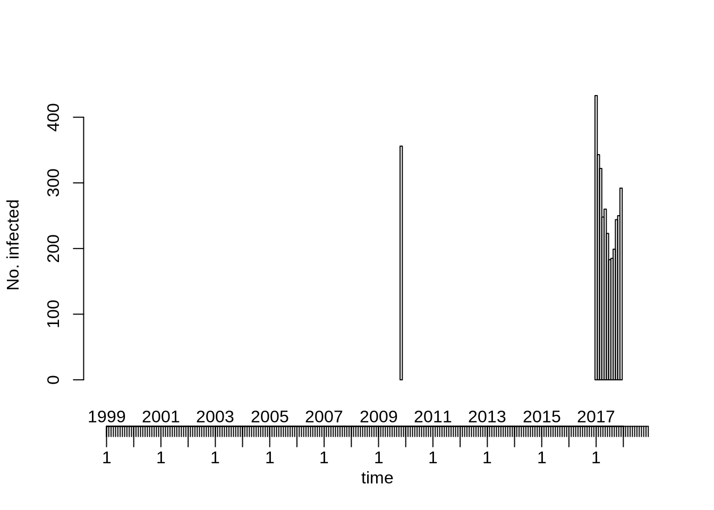
## the time series obviously contains missing values
## ggplot2 version:
autoplot.sts(aggregate(IMD0, by = "unit"))Warning: Removed 227 rows containing missing values (position_stack).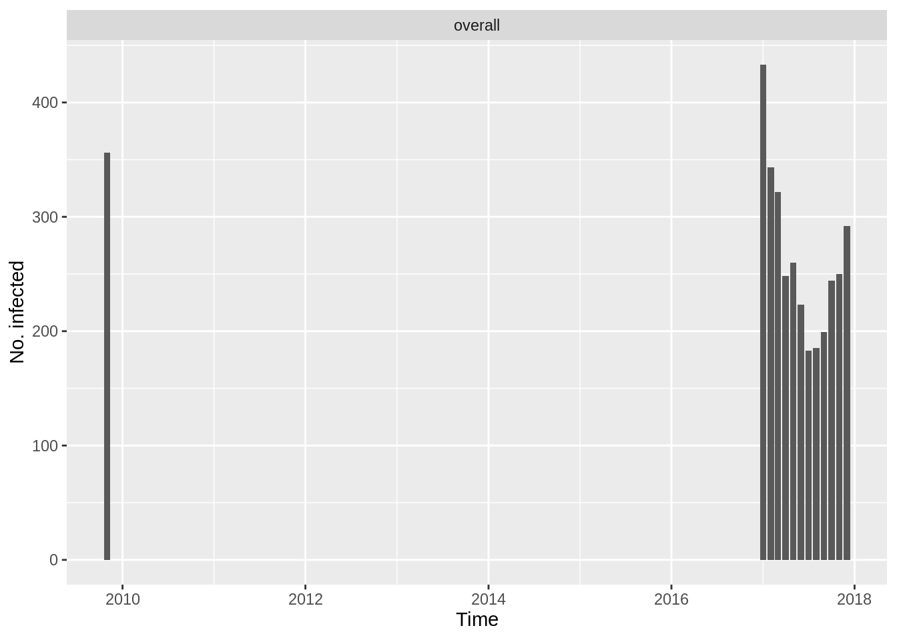
To keep things simple, we restrict the remaining exercises to a subset of the countries:
IMD <- IMD0[, grep("^[ADFNU]", colnames(IMD0))]Visualizations
observed ~ time
Plot the overall and country-specific count time series, using either the conventional plot method or autoplot.sts() (requires ggplot2). The latter has an argument to plot incidences instead of counts.
solution
## count time series
plot(IMD, type = observed ~ time) # overall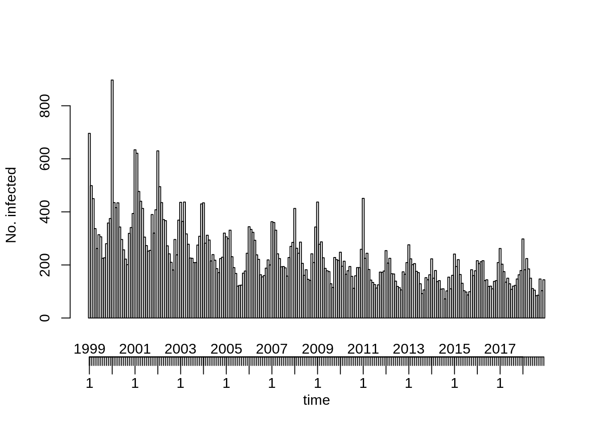
plot(IMD)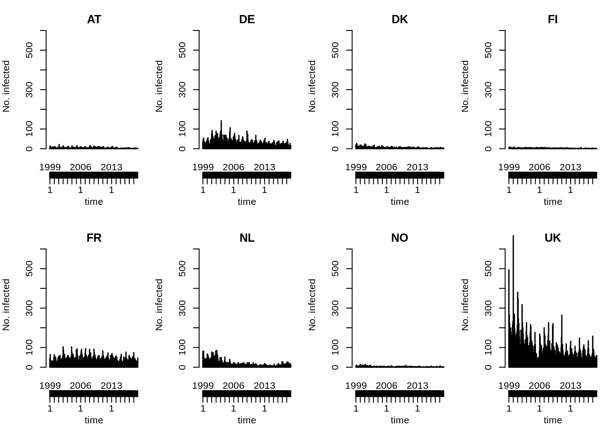
autoplot.sts(IMD)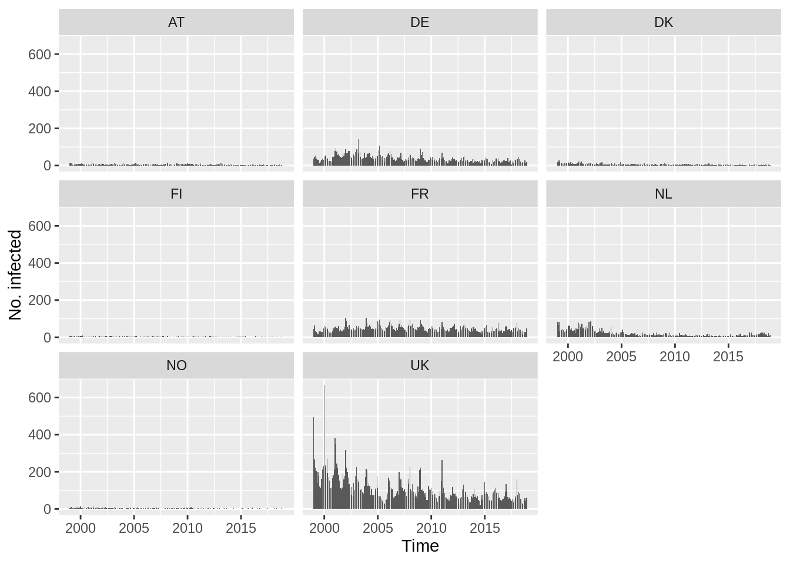
## incidence time series (per 100'000 inhabitants)
autoplot.sts(IMD, population = 100000)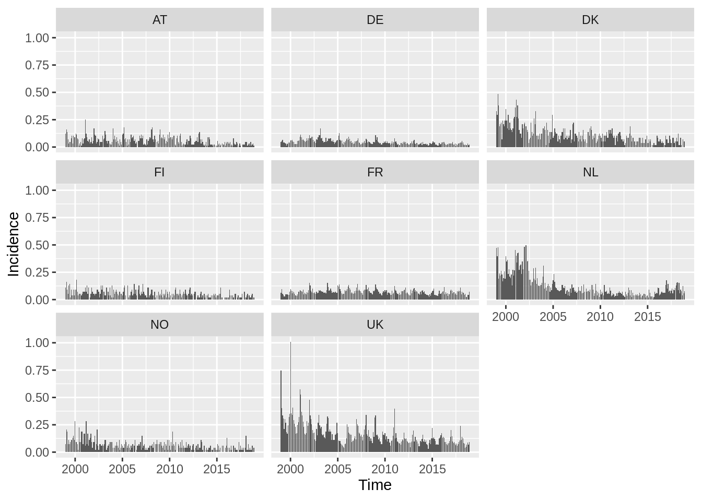
observed ~ unit
Produce a map with the country-specific cumulative number of cases (or incidence) over time. See help("stsplot_space") for options.
solution
plot(IMD, type = observed ~ unit)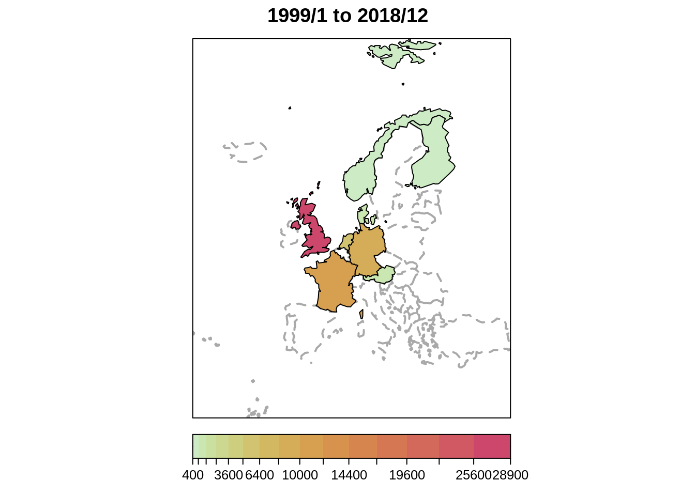
## cumulative incidence (per 100'000 inhabitants),
## using some of the graphical options
plot(IMD, type = observed ~ unit, population = 100000,
col.regions = hcl.colors(100, rev = TRUE),
gpar.missing = list(lty = 1, col = 8),
col = "white", lwd = 2,
sub = "cumulative incidence (per 100'000 inhabitants)")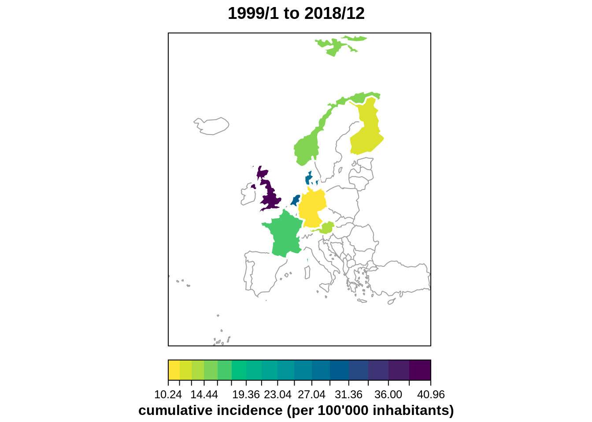
Plot via conversion to other data classes
"sts" objects can be converted to
the basic
"ts"class viaas.ts(),the xts format via
as.xts.sts(),a “tidy” (long)
data.frameviatidy.sts()that can be used as input for, e.g., ggplot2 or lattice.
Try to produce some alternative plots of the time series.
solution
## basic "ts"
plot(as.ts(IMD), las = 1, type = "h") # note the varying y-axes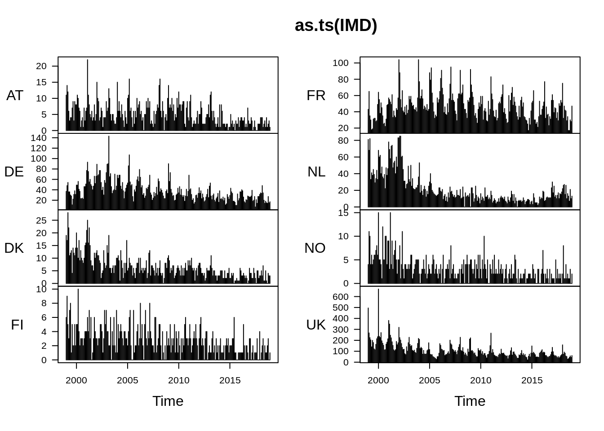
## "xts"
library("xts")
plot(as.xts(IMD), multi.panel = TRUE, yaxis.same = FALSE)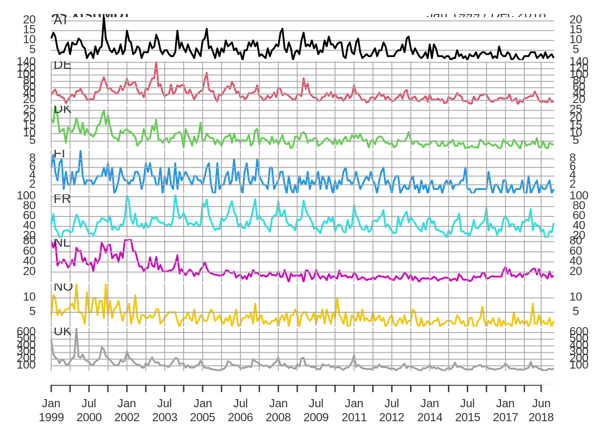
## "lattice"
str(IMDDF <- tidy.sts(IMD))'data.frame': 1920 obs. of 12 variables:
$ epoch : int 1 2 3 4 5 6 7 8 9 10 ...
$ unit : Factor w/ 8 levels "AT","DE","DK",..: 1 1 1 1 1 1 1 1 1 1 ...
$ year : num 1999 1999 1999 1999 1999 ...
$ freq : num 12 12 12 12 12 12 12 12 12 12 ...
$ epochInYear : num 1 2 3 4 5 6 7 8 9 10 ...
$ epochInPeriod: num 0.0833 0.1667 0.25 0.3333 0.4167 ...
$ date : Date, format: "1999-01-01" "1999-02-01" "1999-03-01" ...
$ observed : num 11 14 12 6 3 4 4 7 9 3 ...
$ state : logi FALSE FALSE FALSE FALSE FALSE FALSE ...
$ alarm : logi NA NA NA NA NA NA ...
$ upperbound : num NA NA NA NA NA NA NA NA NA NA ...
$ population : int 8822267 8822267 8822267 8822267 8822267 8822267 8822267 8822267 8822267 8822267 ...library("lattice")
xyplot(observed ~ date | unit, data = IMDDF, type = "h", as.table = TRUE)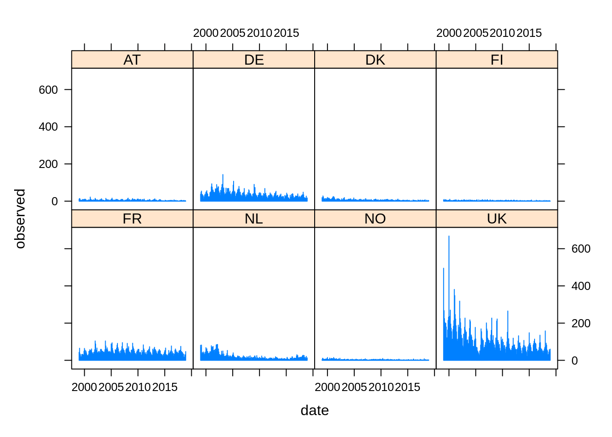
## "ggplot2"
library("ggplot2")
ggplot(IMDDF, aes(x = date, y = observed)) + geom_col() + facet_wrap(~ unit)Univariate hhh4() modelling exercise
Introduction
We will now estimate simple, univariate hhh4() models for the IMD time series from France:
IMD1 <- IMD[,"FR"]
plot(IMD1)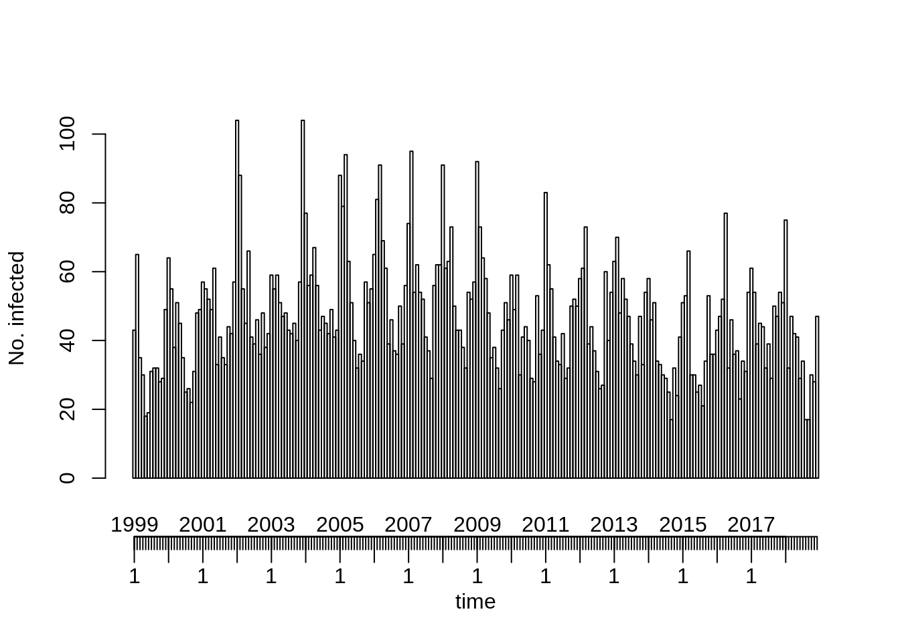
## plot yearly time series to investigate seasonality, here using "lattice"
library("lattice")
xyplot(observed ~ factor(epochInYear), data = tidy.sts(IMD1),
groups = year, type = "l", xlab = "month")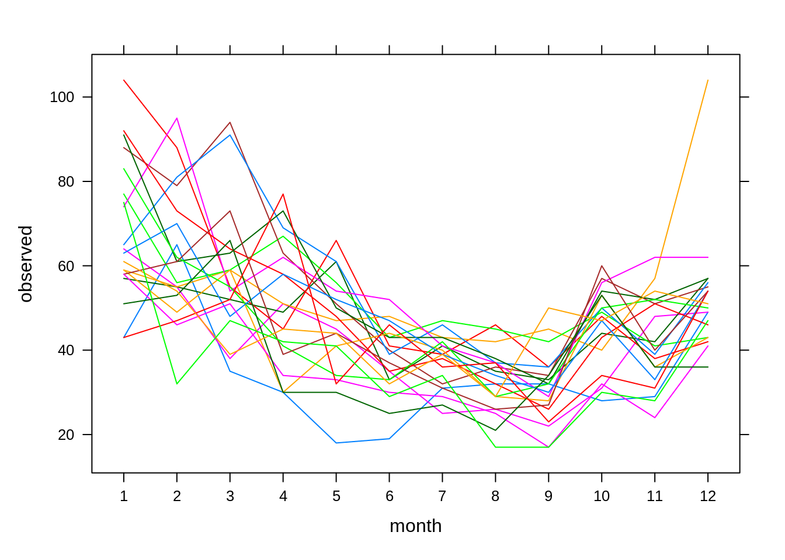
Seasonality can be captured by including transformations of time (sine-cosine terms) as covariates in the model.
With monthly data, we will miss some of the infection dynamics and essentially aggregate over two generations. On the other hand, including a single lag as in the original formulation of the observation-driven hhh4 model seems sufficient.
In statistical terms, we will fit simple models of the form
\[ Y_t | Y_{t-1} \sim \operatorname{NegBin}(\lambda_t y_{t-1} + \nu_t, \phi) \]
where the log-linear predictors \(\lambda_t\) (ar) and \(\nu_t\) (end) could both use the regression formula
addSeason2formula(~ t, S = s, period = 12)with s being the number of harmonics (each harmonic needing two parameters, amplitude and shift). In mathematical notation, this amounts to log-linear predictors of the form
\[ \alpha + \beta t + \sum_{s=1}^S \left\{ \gamma_s \sin(s \omega t) + \delta_s \cos(s \omega t) \right\} \]
with fundamental frequency \(\omega=2\pi/12\).
Tasks
- Estimate a few
hhh4()models of the above form (with or without trend) and compare them usingAIC()(Akaike Information Criterion). Note that you can easily estimate a new model with an updated number of harmonics and dropped AR trend from a previous model fit:
fit2 <- update(fit1, ar = list(f = ~ 1), S = list(ar = 2, end = 2))Plot the fitted time series and the estimated seasonal curves of one or more useful models.
Use
oneStepAhead()to run rolling monthly forecasts over the last two years andplot()the result. You could also look at apit()histogram of these probabilistic forecasts.
solution
## model 1 with time trend and single sinusoidal curve in both components
(form1 <- addSeason2formula(~t, S = 1, period = 12))~t + sin(2 * pi * t/12) + cos(2 * pi * t/12)fit1 <- hhh4(IMD1, control = list(ar = list(f = form1),
end = list(f = form1),
family = "NegBin1"))
summary(fit1)
Call:
hhh4(stsObj = IMD1, control = list(ar = list(f = form1), end = list(f = form1),
family = "NegBin1"))
Coefficients:
Estimate Std. Error
ar.1 -0.9109893 0.2132560
ar.t -0.0008338 0.0010388
ar.sin(2 * pi * t/12) 0.0150849 0.1525758
ar.cos(2 * pi * t/12) -0.2375763 0.1751476
end.1 3.3798524 0.1314850
end.t -0.0003699 0.0005889
end.sin(2 * pi * t/12) 0.0558467 0.0890148
end.cos(2 * pi * t/12) 0.4992783 0.1029933
overdisp 0.0304332 0.0047301
Log-likelihood: -895.61
AIC: 1809.22
BIC: 1840.5
Number of units: 1
Number of time points: 239 ## for parameter interpretation:
summary(fit1, maxEV = TRUE, amplitudeShift = TRUE, idx2Exp = TRUE)
Call:
hhh4(stsObj = IMD1, control = list(ar = list(f = form1), end = list(f = form1),
family = "NegBin1"))
Coefficients:
Estimate Std. Error
exp(ar.1) 0.4021262 0.0857558
exp(ar.t) 0.9991665 0.0010379
ar.A(2 * pi * t/12) 0.2380547 0.1787364
ar.s(2 * pi * t/12) -1.5073863 0.0972142
exp(end.1) 29.3664369 3.8612452
exp(end.t) 0.9996302 0.0005887
end.A(2 * pi * t/12) 0.5023919 0.0978861
end.s(2 * pi * t/12) 1.4594044 0.0612924
overdisp 0.0304332 0.0047301
Epidemic dominant eigenvalue: 0.26 -- 0.51
Log-likelihood: -895.61
AIC: 1809.22
BIC: 1840.5
Number of units: 1
Number of time points: 239 ## model 2 without time trends
form2 <- addSeason2formula(~1, S = 1, period = 12)
fit2 <- hhh4(IMD1, control = list(ar = list(f = form2),
end = list(f = form2),
family = "NegBin1"))
summary(fit2, maxEV = TRUE, amplitudeShift = TRUE, idx2Exp = TRUE)
Call:
hhh4(stsObj = IMD1, control = list(ar = list(f = form2), end = list(f = form2),
family = "NegBin1"))
Coefficients:
Estimate Std. Error
exp(ar.1) 0.399107 0.064866
ar.A(2 * pi * t/12) 0.219542 0.153981
ar.s(2 * pi * t/12) -1.524598 0.091334
exp(end.1) 26.530592 2.917682
end.A(2 * pi * t/12) 0.521711 0.101092
end.s(2 * pi * t/12) 1.475408 0.063261
overdisp 0.031759 0.004843
Epidemic dominant eigenvalue: 0.32 -- 0.50
Log-likelihood: -898.38
AIC: 1810.75
BIC: 1835.09
Number of units: 1
Number of time points: 239 AIC(fit1, fit2) df AIC
fit1 9 1809.216
fit2 7 1810.753## model 3 with two harmonics
fit3 <- update(fit2, S = list(ar = 2, end = 2))
AIC(fit2, fit3) df AIC
fit2 7 1810.753
fit3 11 1802.036## fitted values and estimated seasonality
plot(fit3)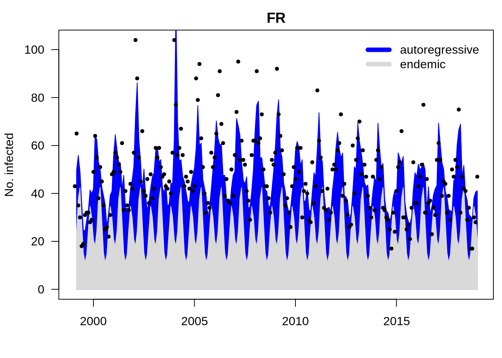
plot(fit3, type = "season")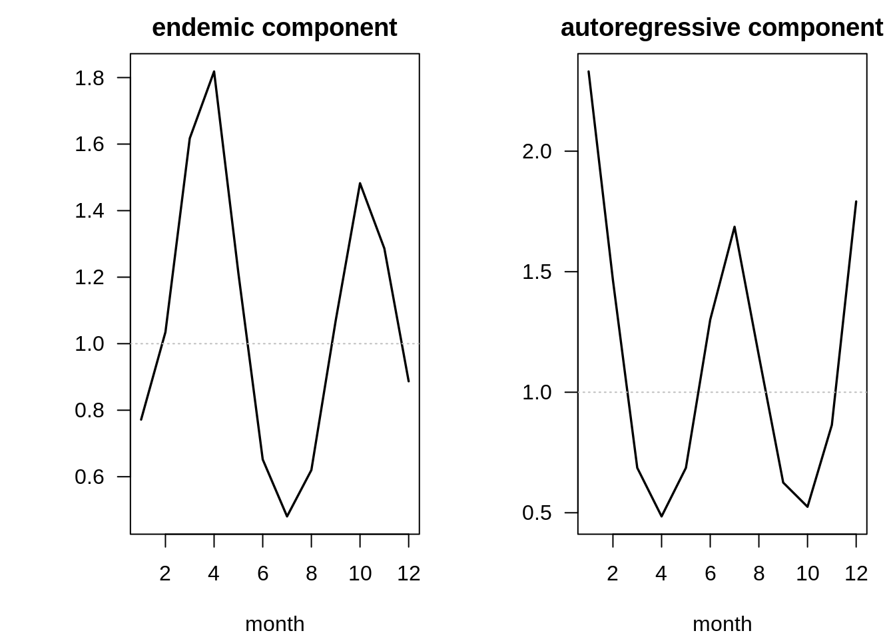
## compute rolling monthly forecasts
osa <- oneStepAhead(fit3, nrow(IMD1) - 2*52, verbose = interactive())
plot(osa)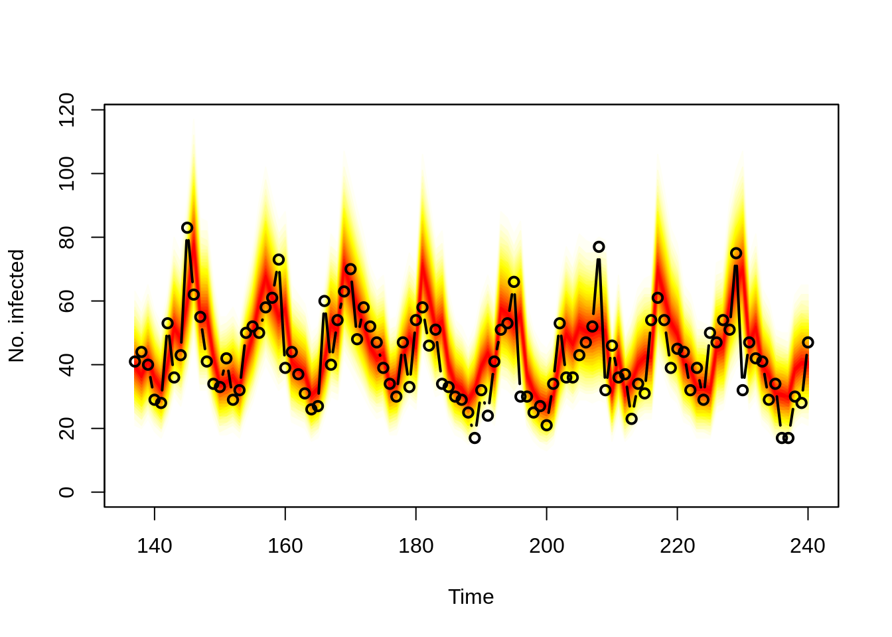
head(quantile(osa)) # for prediction intervals 2.5 % 10.0 % 50.0 % 90.0 % 97.5 %
137 24 29 39 52 59
138 22 27 37 48 55
139 25 30 41 54 61
140 21 26 36 47 54
141 19 23 33 43 49
142 24 29 40 52 59pit(osa) # model tends to overpredict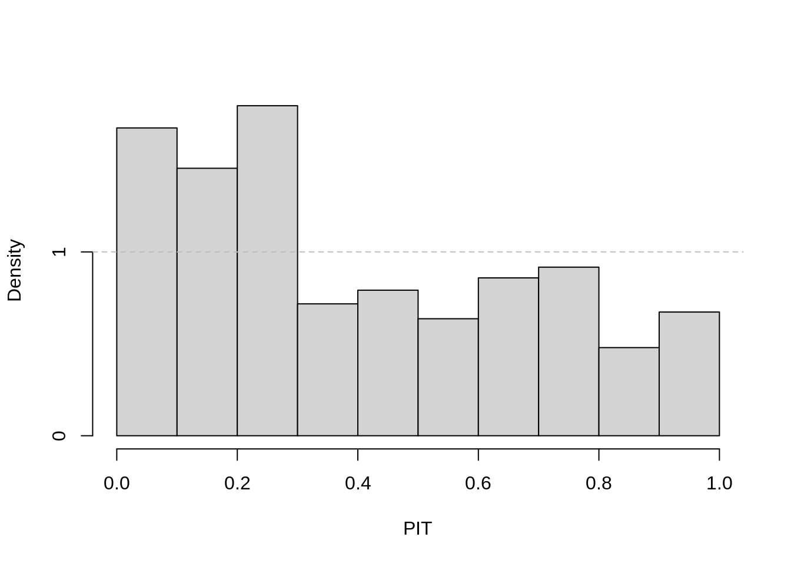